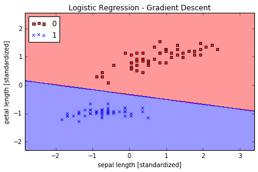

Sebastian Raschka, 2015
https://github.com/rasbt/python-machine-learning-book
Python Machine Learning Essentials - Code Examples¶
Bonus Material - A Simple Logistic Regression Implementation¶
Note that the optional watermark extension is a small IPython notebook plugin that I developed to make the code reproducible. You can just skip the following line(s).
In [1]:
%load_ext watermark
%watermark -a 'Sebastian Raschka' -u -d -v -p numpy,pandas,matplotlib
Sebastian Raschka
Last updated: 12/22/2015
CPython 3.5.1
IPython 4.0.1
numpy 1.10.2
pandas 0.17.1
matplotlib 1.5.0
In [2]:
# to install watermark just uncomment the following line:
#%install_ext https://raw.githubusercontent.com/rasbt/watermark/master/watermark.py

Implementing logistic regression in Python¶
The following implementation is similar to the Adaline implementation in Chapter 2 except that we replace the sum of squared errors cost function with the logistic cost function
\[J(\mathbf{w}) = \sum_{i=1}^{m} - y^{(i)} log \bigg( \phi\big(z^{(i)}\big) \bigg) - \big(1 - y^{(i)}\big) log\bigg(1-\phi\big(z^{(i)}\big)\bigg).\]
In [3]:
class LogisticRegression(object):
"""LogisticRegression classifier.
Parameters
------------
eta : float
Learning rate (between 0.0 and 1.0)
n_iter : int
Passes over the training dataset.
Attributes
-----------
w_ : 1d-array
Weights after fitting.
cost_ : list
Cost in every epoch.
"""
def __init__(self, eta=0.01, n_iter=50):
self.eta = eta
self.n_iter = n_iter
def fit(self, X, y):
""" Fit training data.
Parameters
----------
X : {array-like}, shape = [n_samples, n_features]
Training vectors, where n_samples is the number of samples and
n_features is the number of features.
y : array-like, shape = [n_samples]
Target values.
Returns
-------
self : object
"""
self.w_ = np.zeros(1 + X.shape[1])
self.cost_ = []
for i in range(self.n_iter):
y_val = self.activation(X)
errors = (y - y_val)
neg_grad = X.T.dot(errors)
self.w_[1:] += self.eta * neg_grad
self.w_[0] += self.eta * errors.sum()
self.cost_.append(self._logit_cost(y, self.activation(X)))
return self
def _logit_cost(self, y, y_val):
logit = -y.dot(np.log(y_val)) - ((1 - y).dot(np.log(1 - y_val)))
return logit
def _sigmoid(self, z):
return 1.0 / (1.0 + np.exp(-z))
def net_input(self, X):
"""Calculate net input"""
return np.dot(X, self.w_[1:]) + self.w_[0]
def activation(self, X):
""" Activate the logistic neuron"""
z = self.net_input(X)
return self._sigmoid(z)
def predict_proba(self, X):
"""
Predict class probabilities for X.
Parameters
----------
X : {array-like, sparse matrix}, shape = [n_samples, n_features]
Training vectors, where n_samples is the number of samples and
n_features is the number of features.
Returns
----------
Class 1 probability : float
"""
return activation(X)
def predict(self, X):
"""
Predict class labels for X.
Parameters
----------
X : {array-like, sparse matrix}, shape = [n_samples, n_features]
Training vectors, where n_samples is the number of samples and
n_features is the number of features.
Returns
----------
class : int
Predicted class label.
"""
# equivalent to np.where(self.activation(X) >= 0.5, 1, 0)
return np.where(self.net_input(X) >= 0.0, 1, 0)
Reading-in the Iris data¶
In [4]:
import pandas as pd
df = pd.read_csv('https://archive.ics.uci.edu/ml/'
'machine-learning-databases/iris/iris.data', header=None)
df.tail()
Out[4]:
| 0 | 1 | 2 | 3 | 4 | |
|---|---|---|---|---|---|
| 145 | 6.7 | 3.0 | 5.2 | 2.3 | Iris-virginica |
| 146 | 6.3 | 2.5 | 5.0 | 1.9 | Iris-virginica |
| 147 | 6.5 | 3.0 | 5.2 | 2.0 | Iris-virginica |
| 148 | 6.2 | 3.4 | 5.4 | 2.3 | Iris-virginica |
| 149 | 5.9 | 3.0 | 5.1 | 1.8 | Iris-virginica |
In [5]:
import numpy as np
# select setosa and versicolor
y = df.iloc[0:100, 4].values
y = np.where(y == 'Iris-setosa', 1, 0)
# extract sepal length and petal length
X = df.iloc[0:100, [0, 2]].values
# standardize features
X_std = np.copy(X)
X_std[:,0] = (X[:,0] - X[:,0].mean()) / X[:,0].std()
X_std[:,1] = (X[:,1] - X[:,1].mean()) / X[:,1].std()
A function for plotting decision regions¶
In [6]:
from matplotlib.colors import ListedColormap
def plot_decision_regions(X, y, classifier, resolution=0.02):
# setup marker generator and color map
markers = ('s', 'x', 'o', '^', 'v')
colors = ('red', 'blue', 'lightgreen', 'gray', 'cyan')
cmap = ListedColormap(colors[:len(np.unique(y))])
# plot the decision surface
x1_min, x1_max = X[:, 0].min() - 1, X[:, 0].max() + 1
x2_min, x2_max = X[:, 1].min() - 1, X[:, 1].max() + 1
xx1, xx2 = np.meshgrid(np.arange(x1_min, x1_max, resolution),
np.arange(x2_min, x2_max, resolution))
Z = classifier.predict(np.array([xx1.ravel(), xx2.ravel()]).T)
Z = Z.reshape(xx1.shape)
plt.contourf(xx1, xx2, Z, alpha=0.4, cmap=cmap)
plt.xlim(xx1.min(), xx1.max())
plt.ylim(xx2.min(), xx2.max())
# plot class samples
for idx, cl in enumerate(np.unique(y)):
plt.scatter(x=X[y == cl, 0], y=X[y == cl, 1],
alpha=0.8, c=cmap(idx),
marker=markers[idx], label=cl)
In [7]:
%matplotlib inline
import matplotlib.pyplot as plt
lr = LogisticRegression(n_iter=500, eta=0.2).fit(X_std, y)
plt.plot(range(1, len(lr.cost_) + 1), np.log10(lr.cost_))
plt.xlabel('Epochs')
plt.ylabel('Cost')
plt.title('Logistic Regression - Learning rate 0.01')
plt.tight_layout()
plt.show()

In [8]:
plot_decision_regions(X_std, y, classifier=lr)
plt.title('Logistic Regression - Gradient Descent')
plt.xlabel('sepal length [standardized]')
plt.ylabel('petal length [standardized]')
plt.legend(loc='upper left')
plt.tight_layout()
